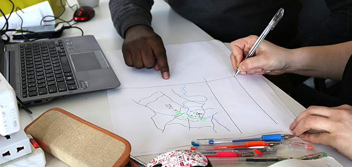

Open Data in Practice: 25-27 October, 2016
Tuesday 25 October 2016 8:15am - Thursday 27 October 2016 4:00pm
The Open Data Institute, 65 Clifton Street, London, EC2A 4JE
The essential course for those looking to take advantage of open data in their organisation and develop all the required skills.
The Open Data in Practice course is for those who have experience with open data and have knowledge of the definitions of open data and best practices for publishing open data.
We recommend Open Data in a Day as a prerequisite to this course.
Superb, enlightening! Enjoyed every minute of it!" Ian, Open Data in Practice, April 2014
| Date | Price | Book |
|---|

The essential course for those looking to develop the necessary skills to take advantage of open data in their organisation. Open data in practice is for those who have experience with open data and have knowledge of the definitions of open data and best practices for publishing open data.
If you are looking to publish, consume and exploit open data to improve efficiency, create new services and to act on opportunities, then this intensive and interactive three day course is for you. Suitable for both individuals and teams, it has been designed by our experts to minimise your time out of the office and maximise your learning.
We will cover the very best practice in using and publishing open data and the legal and policy requirements in order to remove any potential risks.
The course focuses on three key areas
Day 1: Publishing open data
In day one we explore how data is published and why different practices suit different types of data. This practical day will give you hands-on experience with a different types of datasets and the challenges and opportunities to publish each type.
- By the end of day one you will be able to:
- Design and use a number of different data structures and formats with data.
- Clean data ready for publication
- Publish a dataset in a number of platforms
- Use a number of services to access data in different formats
- Build a linked data set by combining data from two sources
Day 2: Exploiting open data
In day one, we build on the knowledge from day one and explore how open data can be exploited to build products and services. This day is designed for you to discover how organisations are successfully innovating with data.
By the end of day two you will be able to:
- Explain the impact of laws and different licenses on data publication and usage.
- Critically analyse how big and open data companies succeed.
- Identify where open data companies sit in the overall data ecosystem.
- Analyse how open data services can become a key part of a business model.
- Design an open data startup (both in terms of service and value)
Day 3: Analysing and visualising open data
In the final day of the course we focus on increasing the impact of open data with visualisation. This day covers the key knowledge and skills required to make the most of your data in the least amount of time.
By the end of day three you will be able to:
- Apply a number of statistical formula to examine data
- Analyse a number of datasets to reveal insight
- Describe how the human brain interprets visually presented data
- Use a number of techniques to make information ‘pop’
- Identify a number of deception techniques in visualisations
- Create a geographic visualisation of open data
- Create an interactive dashboard for an open dataset
- Create a visualisation from live data
A great way to be immersed in the world of open data - particularly for those who have some prior knowledge and understanding." Briony, Open Data in Practice, April 2014
Who is this for?
Previous participants have come from public, private and third sectors, and have included roles such as: managers, technologists, all data roles, directors and those working in knowledge and transparency.
This intensive, practical course has been carefully designed for you to apply your learnings to your work or project, to solve a work based problem or to create a new opportunity in a stress free and engaging way.
Course prerequisites
This course is for those already beginning to work with open data who would like to put it more into practice. We recommend taking Open Data in a Day prior to attending, if you are new to this area.
What to expect
Over the course of three days, you can expect to gain skills as both an open data strategist and practitioner. You will work independently and collaboratively using the latest tools and techniques. Open data in practice is broad, intense and fun! Expect to come away with a range of techniques and strategies you can put into practice straight away.
Course requirements
A wifi enabled laptop, on which you have access to install software.
iPads, tablets and mobile devices will not be suitable for hands-on sessions.
Locked down corporate or public sector laptops may not be suitable to use for this course due to security limitations, if you're worried about this do check with us before attending. We have a few computers that can be hired for the course, contact us if this is of interest.
Course materials
Course slides and content are available on the dedicated course website.
About ODI courses
Co-founded by the inventor of the web, Tim Berners-Lee, the ODI offers courses that are friendly, supportive, fun, and take place in our lively headquarters in Shoreditch. No question is a silly question in our classrooms, and our expert teachers will arm you with all the practical skills you need for applying what you’ve learnt to the real world.
Course Leader(s)
Mellissa Norman
Mellissa has always had an interest in creativity, business and technology and how they work together and has 18 years experience across film, TV, digital, tech and interactive.
She is passionate about business innovation, uncovering new revenue streams and business models and has worked with: Royal Shakespeare Company, BBC, NixonMcinnes, UNESCO and The Royal Commonwealth Society as well many tech and digital start-ups.
Mel started her career working as an assistant to Lynne Ramsay (Ratcatcher) before moving through the ranks and worked for Endemol, BBC, Brighter Pictures and developed a slate of horror films. At the same time the Film/TV industries were being disrupted by technology and understanding the business opportunities for digital and tech became extremely important and key to Mel's work as a consultant, trainer and producer. In 2007 Mel and her colleague, Will Pearson, won the ‘Socially responsive’ category at MIPTV’s 360 degree competition.
In 2000 Mel took a sabbatical as a business consultant working with corporate companies for SBR consulting including: Npower, Business in the Community, Robert Half and Pathway Recruitment.
In 2011 Mel directed Social Media Week London and in 2012 Mel became the Theme Champion for Business Models and Growth for the Creative Industries Knowledge Transfer Network. Mel is currently working as a Growth Coach for the Growth Accelerator programme.
David Tarrant
Learning Skills Lead
David joined the ODI from the University of Southampton where he was a Lecturer in the Web and Internet Science Group. He was responsible for creating the world's first undergraduate course in open data.
Since joining the ODI David has put in place key educational content that has helped transform governments and unlock over $15m for startups. Additionally David has applied his data science skills to build policy making tools for open data leaders, including the Open Data Barometer visualisation. This tool has been used to guide policy development and allow leaders to compare and contrast their open data initiatives with other similar initiatives globally.
As Learning Skills Lead, David is responsible for the direction and quality of the ODI's learning offering. Products include face to face training, eLearning and the ODI's Learning Records System (LRS). Underpinned by the skills framework, all of these products put together ensure that the ODI can offer high quality online and face to face training to as many people as possible.